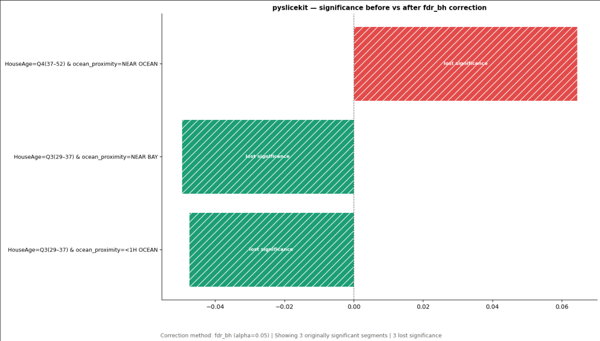
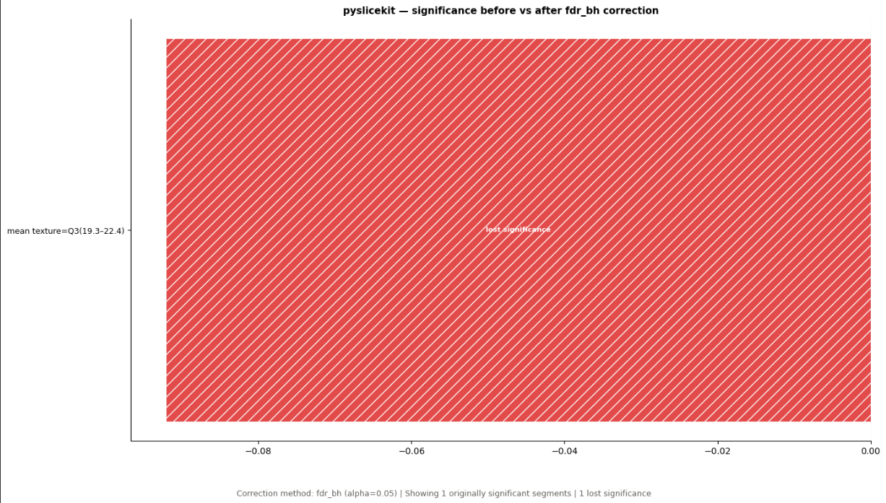

Multiple-Testing Correction¶
Why Correction Matters¶
PySliceKit evaluates many candidate segments. When many statistical tests are performed at the same time, some segments may appear significant purely by chance, even when there is no real performance difference.
Multiple-testing correction reduces this risk by adjusting the significance decision across the complete set of eligible segment-level tests.
PySliceKit provides this functionality through apply_correction().
Applying FDR-BH Correction¶
The Benjamini-Hochberg procedure controls the false discovery rate (FDR). Instead of treating every raw p-value independently, it evaluates the complete set of eligible p-values and determines which results remain significant after correction.
The correction is applied to an existing list of SliceResult objects:
from pyslicekit.correction import apply_correction
apply_correction(
results,
method="fdr_bh",
alpha=0.05,
)
The correction adds the corrected p-value and corrected significance decision to each eligible result. Results that do not have a usable p-value are not eligible for correction.
Interpreting the Before-and-After Comparison¶
A segment can be statistically significant before correction but no longer significant after correction. This does not mean that the segment disappeared from the analysis. It means that the evidence was not strong enough to remain significant after accounting for the number of tests performed.
The correction comparison renderer focuses on segments that were significant before correction but lost significance afterward:
from pyslicekit.correction_render import render_correction_comparison
figure = render_correction_comparison(
results,
method="fdr_bh",
alpha=0.05,
save_path="docs/_static/correction_comparison.png",
)
The optional save_path argument is important when the figure is intended
for Sphinx documentation. Displaying a figure in Jupyter does not automatically
create a reusable image file for the documentation build.
California Housing Example¶
The notebook example applies FDR-BH correction to the California Housing regression audit. The generated comparison figure is saved as:
{kind=link}

The corresponding text report is saved by the notebook as
docs/correction_report_california_housing.txt.
Breast Cancer Example¶
The same workflow is applied to the Breast Cancer classification audit:
{kind=link}

The corresponding text report is saved by the notebook as
docs/correction_report_breast_cancer.txt.
Recommended Workflow¶
Run
pyslicekit.evaluate()to produce the original slice results.Apply
apply_correction()to the results.Inspect corrected significance using the fields added to
SliceResult.extra.Export a correction report for review.
Save the comparison figure into the documentation
_staticdirectory.Reference the saved image from an
.rstpage.
Correction is an additional statistical safeguard. It should be used together with sample-size checks, effect-size inspection, and domain knowledge.